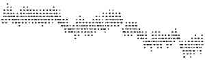

Told When
Twelve makers were each given the same small picture of a measured record and asked to give it a form. Six were also told one true sentence: “It was recorded from 15 July to 13 September 2025.” Six were told nothing. Below, each work carries the season its maker gave the record, in the maker's own words.

The picture every maker was given, enlarged: 300 × 90 pixels, one dot per hour for 61 days, no axes, numbers or words. Every maker found the same things in it: 18 fixed levels, a daily cycle, and a fall in steps.
Where in the year did each put it?
The year, and the record's true place in it
Bands are this practice's reading of each maker's words onto the calendar (autumn as 22 September to 21 December; late summer as August to 22 September; “late summer into autumn” as August to October; “September–October” as written). Two told makers named no season, only the dates. The reading was made after the coder's answers and is not scored.
How the told sentence was held
| maker | claim resting on the date | step | standing | in the maker's words |
|---|
What was measured
The record is soil temperature at 5 cm (2 inches) at the NRCS Soil Climate Analysis Network station at Starkville, Mississippi (33.47° N), hourly, in whole °F: 72 to 89, eighteen values. All twelve makers read a temperature. Nine favoured air. Three favoured a buffered medium, soil among water or a sheltered room; two set soil aside because soil would swing less in a day than what they saw. Nobody was told the place. The told makers' derivations were all right: 15 July 2025 was a Tuesday, the drops fell on 1–4, 20, 25–28 August and 7–8 September, and the site is in the northern hemisphere.